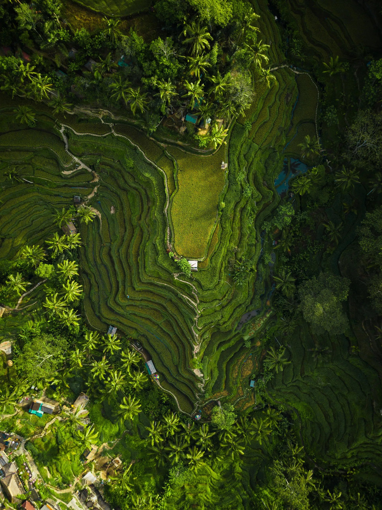

Legalitas Jelas
Akta, pengesahan, profil pengurus, dan kontak resmi ditampilkan terbuka.

Jejak Dampak Nusantara menjadi jembatan antara donatur, perusahaan, dan masyarakat untuk memajukan pendidikan, kesehatan, dan keberlanjutan di seluruh Indonesia.
Akta, pengesahan, profil pengurus, dan kontak resmi ditampilkan terbuka.
Setiap program memiliki indikator, output, dokumentasi, dan laporan.
Mitra dapat memilih program sesuai isu, wilayah, SDGs, dan target dampak.
Siap dari needs assessment, desain program, implementasi, sampai M&E.
"Setiap aksi kecil meninggalkan jejak dampak yang nyata, terukur, dan berkelanjutan."
Jejak Dampak Nusantara hadir sebagai jembatan kolaborasi antara donatur, perusahaan, dan masyarakat untuk menciptakan dampak yang dapat dibuktikan.
Baca profil yayasan →Pilih program, susun skema CSR, atau mulai campaign donasi yang transparan dan terdokumentasi.